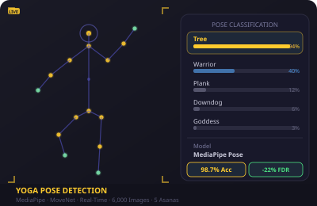

Explorations in Yoga Pose Detection using Computer Vision Models
Python
MediaPipe
MoveNet
Computer Vision
Machine Learning
Keypoint Detection
JavaScript
HTML / CSS
Data Augmentation
📄 View Full Project Report
Overview
Led the development of a real-time Yoga Pose Detection system comparing two state-of-the-art computer vision models - MediaPipe and MoveNet - across a labeled dataset of 6,000 images spanning five yoga asanas. Through iterative fine-tuning, data augmentation, and multi-joint keypoint tracking, the system achieved pose detection accuracy between 95.4% and 98.7% with MediaPipe, reducing the false detection rate by 22% over baseline performance.
What Was Built
Model Selection & Comparison
Evaluated MediaPipe Pose and
MoveNet (Lightning & Thunder) on identical
data splits to benchmark accuracy, inference speed, and robustness under
different conditions. MediaPipe's multi-joint keypoint tracking outperformed
MoveNet across all five asana classes in final evaluation.
Dataset & Training
Trained and validated models on a 6,000-image
labeled dataset covering five yoga asanas: Plank, Warrior, Tree,
Downdog, and Goddess. Applied extensive
data augmentation - random flips,
brightness shifts, and rotation - to simulate varied lighting and angle
scenarios and improve generalization.
Model Optimization
Reduced the false detection rate by 22%
through iterative fine-tuning of keypoint confidence thresholds, pose
classification boundaries, and augmentation strategies. Applied the complete
ML lifecycle - preprocessing, training,
cross-validation, and evaluation - to optimize for real-time performance.
Real-Time Web Platform
Developed a web-based interface using
HTML, CSS, and JavaScript that processes live webcam frames in-browser
and runs model inference in real time. Users perform poses in front of
their camera and receive instant feedback on joint alignment and
posture quality.
Key Results
- Achieved pose detection accuracy ranging from 95.4% to 98.7% with MediaPipe across all five asana classes, with the highest accuracy on structurally distinct poses like Tree and Warrior.
- Reduced false detection rate by 22% over the initial baseline through targeted data augmentation and confidence threshold tuning across varied lighting and camera angle scenarios.
- Multi-joint keypoint tracking with MediaPipe enabled simultaneous real-time analysis of 33 body landmarks, supporting fine-grained posture correction feedback rather than coarse pose classification alone.
- Delivered a fully functional user-centric web platform with real-time inference, designed to scale into wellness and fitness applications where accessible, camera-based pose guidance can replace in-person instruction.